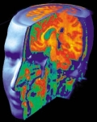

H.M. vivió, desde los 27 años, en el presente. Una cirugía que intentaba reparar una violenta epilepsia erradicó su habilidad para formar un pasado, para aprender y retener. Para él, el mundo nacía nuevo cada minuto: las noticias de ayer no le eran familiares, el rostro que conversaba con él se convertía en un extraño una vez abandonara la habitación y era capaz de contarte la misma historia diez veces en quince minutos; cada ocasión, su primera.
Desde que leí su obituario en el New York Times (http://www.nytimes.com/2008/12/05/us/05hm.html?_r=1&partner=rss&emc=rss&pagewanted=all), he intentado imaginar un mundo como el que él habitó, pero no he tenido mucho éxito; en el intento he vuelto a vislumbrar, sin embargo, la fragilidad de nuestra identidad y su establecido lugar en el cerebro. Una vez más, la biología muestra su pleno control sobre la percepción que formamos del mundo y el lugar que pensamos tener dentro de él.
Su nombre real lo conocemos ahora, después de su muerte a los 82 años. Henry Gustav Molaison, (los lectores de neurología lo recordarán como H. M.), el paciente más importante en la historia de la ciencia del cerebro. Durante 55 años, H.M. fue el voluntario ideal para un sinnúmero de investigadores y participó en cientos de experimentos sobre la memoria y el aprendizaje. Quienes le conocieron lo describen como un hombre amable, algo retraído, pero elocuente e inteligente; si entablabas una conversación con él, era probable que lo escucharas hablar por largo rato, aunque Molaison no lo recordaría después.
La primera vez que leí sobre un caso como el suyo fue en el libro con uno de los títulos más descabelladamente divertidos: “The Man who Mistook his Wife for a Hat” o El hombre que confundió a su esposa con un sombrero, del doctor Oliver Sacks, una recopilación de asombrosas condiciones neurológicas que incluía a otro paciente con este existencial problema, Jimmy G.
Más tarde conocería a H.M., leería sobre él en otros estudios neurológicos que posiblemente sirvieron de base para el guión de aquel intricado filme del año 2000, Memento.
Suzanne Corkin, neuróloga de MIT, confirmó la muerte de H.M en la tarde del martes 2 de diciembre. No dejó mas familia que los científicos que lo conocieron y aquellos que lo atendieron en la institución donde vivió parte de su vida. Y era de esperarse, el hombre, incapacitado por más de cinco décadas para formar memorias, había perdido la habilidad de hacer amigos, de aprender de sus experiencias, de formar una idea precisa de lo que había ocurrido en el mundo durante medio siglo, más de la mitad de una vida. El daño cerebral le había arrancado también, la habilidad de formar una identidad.
Días después de conocer sobre su muerte, comencé a notar lo que él olvidaría. Desde que despierto en las mañanas, mi vida transcurre en una secuencia de eventos que necesito recordar, sin esa capacidad imperante sería imposible vivir, por lo menos, no en la forma necesaria para llenar los requisitos modernos, mucho menos trabajar. Es algo que debo agradecerle diariamente a mi hipocampo.
“La memoria a corto plazo de H.M. estaba bien, él era capaz de retener pensamientos en ella por 20 segundos. El problema venía al momento de mantenerlos por más tiempo, sin el hipocampo esto era imposible”, expresó la doctora Brenda Millner, profesora de cognición neurocientífica en el Instituto Neurológico Montreal, en la Universidad McGill. Millner fue una de las investigadoras que más tiempo pasó con H.M. y gracias a sus experimentos, hoy conocemos importantes características de la memoria.
Por ejemplo, antes se pensaba que la memoria estaba distribuida por todo el cerebro, sin embargo, la lesión sufrida por H.M. junto a los estudios de Millner, especialmente unos publicados en la década de los sesenta, demostraron que existen por lo menos dos sistemas para recordar y que uno puede existir independientemente del otro. Desde entonces, el hipocampo es reconocido como promotor de la memoria declarativa que se encarga de recordar todo lo que experimentamos en el día y guardarlo hasta que la memoria consciente los necesite. Este sistema depende de varias áreas, entre ellas, y muy especialmente, el hipocampo.
Otro sistema que utiliza la memoria es el del aprendizaje motor, que funciona a nivel subconsciente y es manejado por otros mecanismos cerebrales. Este sistema explica por qué podemos montar bicicleta como si nada, luego de no hacerlo por años.
Antes de su muerte, los científicos sometieron a H.M. a unas últimas sesiones de resonancia magnética para intentar reconocer cuáles regiones de su cerebro aún funcionaban y cuáles no. De hecho, los neurólogos conservarán su cerebro para continuar su estudio.
“Henry recordaba anécdotas de su niñez, escalando con sus padres, practicando el tiro al blanco, pero era incapaz de situar estas memorias en el tiempo o formar una narrativa de ellas. No obstante, era el primero en entender el chiste o hacer un comentario inteligente sobre algún tema”, explica Millner. “Sabemos que comprendía que participaba en algo de relevancia sin precedentes para la ciencia, pero era incapaz de recordar los detalles”.
Su inhabilidad para recordar es ya una memoria permanente en la historia de la neurociencia.
Tragedias para el bien de la neurología
Casos clínicos

La ciencia del cerebro se ha beneficiado con horrendas tragedias humanas. Así es, la investigación neurológica en sus comienzos no tenía forma de ver el cerebro, por lo tanto, esos casos bizarros esclarecían un poco el misterio que habita en la azotea del cuerpo humano. Pero la física despliega su magia y nos regala aparatos como la resonancia magnética y la avalancha de estudios que prosiguió al invento ha sido tan enorme, que hasta los mismos neurólogos han tenido que poner freno a las especulaciones sobre estas imágenes del recorrido de la sangre en las neuronas, pues andaban saltando más de lo debido.
La tragedia de H.M. puede que haya comenzado a los nueve años debido a un accidente en bicicleta, pero los neurólogos entonces no tenían los medios para hurgar en el cerebro del niño y ver qué ocurría. El asunto es que después del accidente, Henry comenzó a padecer de terribles convulsiones que a los 27 años eran tan violentas, que el joven decidió someterse a una complicada cirugía. Molaison nunca volvió a ser el mismo.
En una columna anterior hablábamos de la tragedia de David Reimer, cuyo desenlace confirmó que la percepción del género es innata y no puede ser cambiada, ni adquirida. De la misma forma, la desventura del una vez amable Phineas Gage vinculó la personalidad con el cerebro. El temperamento de este hombre bonachón cambió completamente después de un horroroso accidente de trabajo. Su tragedia enseñó a los científicos sobre el papel del cerebro en la agresividad y el genio.
De esta forma, la neurología ha logrado clasificar regiones neuronales y sus funciones específicas pero, más que nada, ha descubierto que la mayor parte de quienes somos, nuestra identidad, temperamento y personalidad, es manejada por los mecanismos que este complejo órgano ha evolucionado durante millones y millones de años.
Sherlock Holmes lo expresó divinamente cuando dijo: “Yo soy un cerebro, mi querido Watson, todo lo demás es un simple apéndice”.
Volver al índice de la Lupa Herética
© 2008-2026 Glenys Álvarez y Sin Dioses. Prohibida la reproducción con fines comerciales.
Comentarios
Comments powered by Disqus